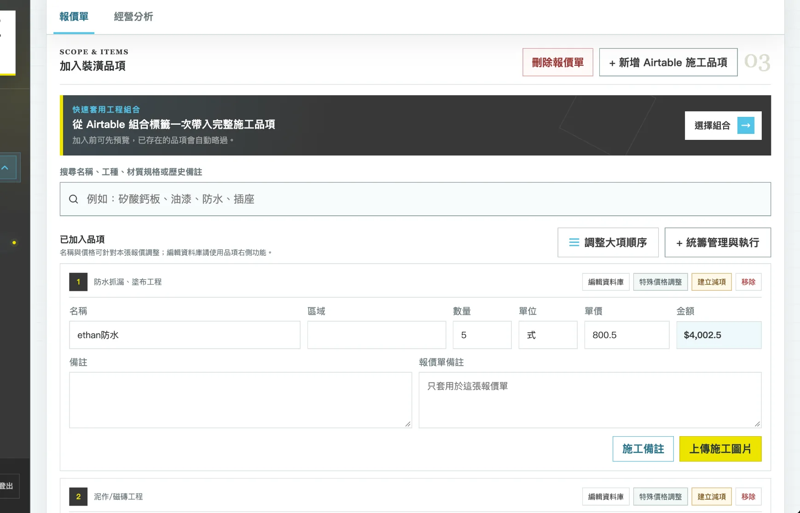
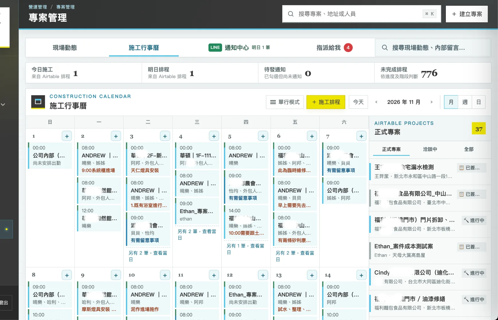
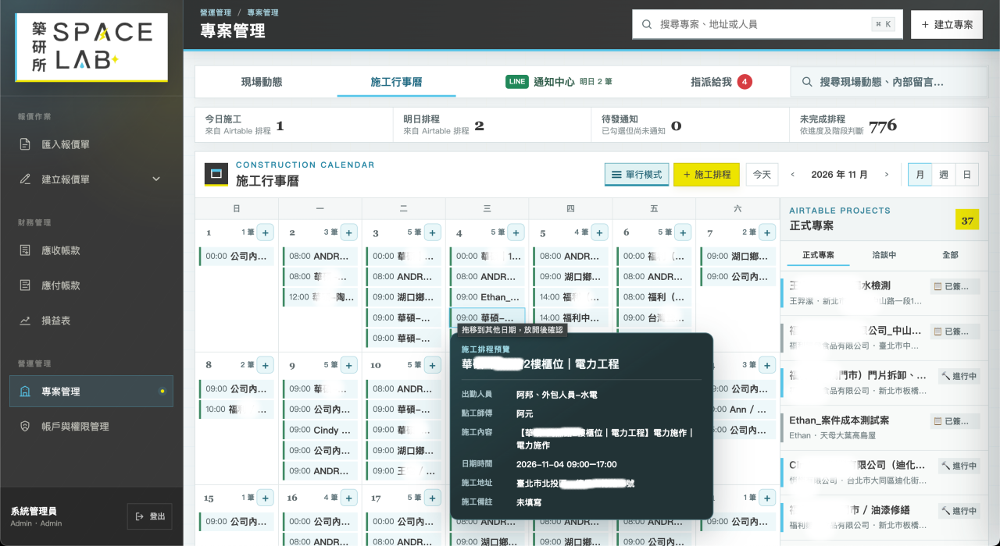
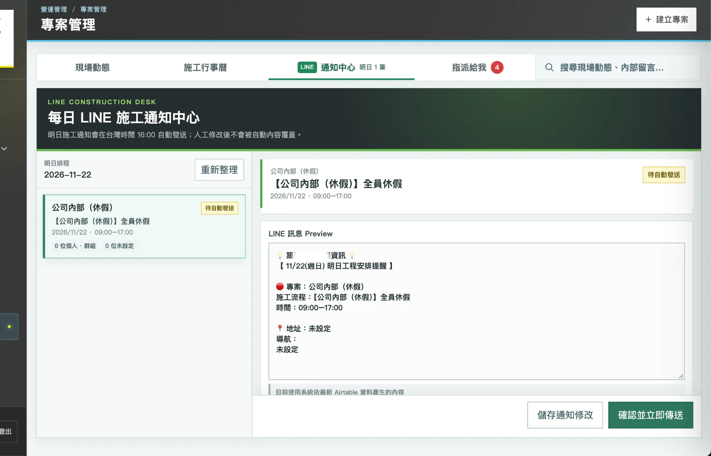

01 / QUOTATION
報價，從清楚的工項開始。
按工種整理施工品項、數量與單價，讓後續成本與執行資料有共同起點。
CASE STUDY 01 / BUSINESS SYSTEMS
為室內設計團隊打造完整的專案營運系統。報價、施工、協作與帳務，不再散落在不同工具裡。

THE CHALLENGE / 01
室內設計工程同時牽動工項、材料、施工人員、客戶溝通與金流。當資訊散在多個工具裡，團隊便難以迅速掌握同一筆案件的全貌。
我們以「專案」為共同資料核心，把每天真正需要的操作串成一條可追蹤的工作流程，而非再增加一個孤立的管理工具。

CONNECTED WORKFLOW / 02
選擇一個階段，看看系統如何讓專案持續往前推進。

按工種整理施工品項、數量與單價，讓後續成本與執行資料有共同起點。
BEYOND THE DASHBOARD / 03
施工安排不只留在行事曆。系統可整理 Airtable 排程，產生 LINE 施工提醒內容，讓管理者預覽、調整並安排發送。

PRODUCT INTERFACE / 04
以清楚的資訊層級與順手的操作設計，讓報價、排程、帳務與驗收不再靠反覆切換與確認。點選畫面可放大。
THE BIGGER PICTURE / 05